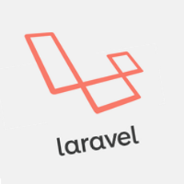
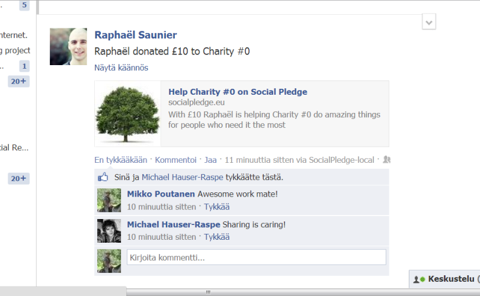
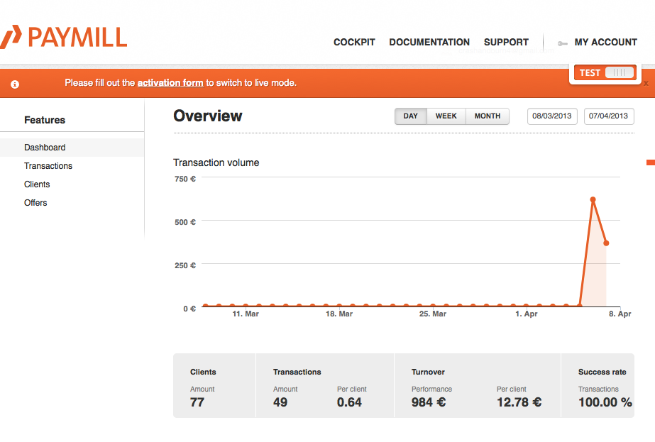
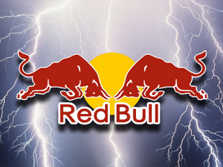
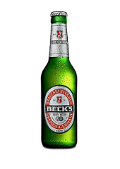

A Facebook integrated website for charitable donations
Team Members
| - Raphael Sounier: | M.Sci IMB (UCL) |
| - Ruifei Yu: | BEng EE (UCL) |
| - Michael Hauser-Raspe: | M.Sc CS (UCL) |
| - Dolan Miu: | M.Sc CS (UCL) |
| - Mikko Poutanen | M.Sc CS (UCL) |
Core Ideas of the Project
- Make charitable donations as simple as possible
- Help charities gain more information about donor base
- Maximise publicity through Facebook
- ... And help donors feel better about themselves
Technologies Used
Goal: Make donations quick, easy, and public

Integration with Facebook 
...and with Paymill 
Challenges
- Time-Pressure
- Allocating the right tasks to the right people
- Learning new technologies
- Writing code simultaneously
- Windows
Coping Strategies
- Communication
- GitHub
- Well-Defined Tasks
- Enthusiasm


Project Take-Aways
- Motivation is key
- There ARE alternative ways to spend a Saturday night
- Red Bull does help
- Learned many wonderful technologies